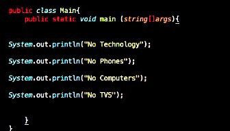

Seven Days With No Technology


Home Initial Reaction Struggles Reflection About Me
This website is made for the Michigan Council of Women in Technology website design competition
Copyright © Neha Subrahmanyam. All rights reserved.
Last updated on Novemeber 29, 2018.